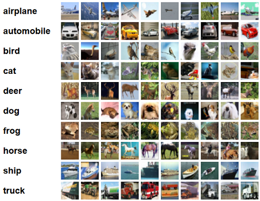

Example¶
CIFAR-10 is a classical benchmark problem for deep learning in image recognition. Given are 10 categories (airplane, dog, ship, ...) and the task is to classify small images accordingly.
The dataset consists of 60000 RGB images of size 32x32 pixels. There are 6000 images per class and the dataset is split into 50000 training images and 10000 test images. For more details see the Tech report.
Here we show how to use nuts-flow/ml and Keras to train a network for this task. For readability we ommit the imports but the complete code and more examples can be found under nutsml/examples.
Network¶
The following network definition of a CNN is a slightly modified copy of the Keras
cifar10_cnn.py
example with the notable exception of the last line, where the model is wrapped in a
KerasNetwork. Note this Keras version 2.x.
INPUT_SHAPE = (32, 32, 3)
NUM_CLASSES = 10
def create_network():
model = Sequential()
model.add(Convolution2D(32, (3, 3), padding='same',
input_shape=INPUT_SHAPE))
model.add(Activation('relu'))
model.add(Convolution2D(32, (3, 3)))
model.add(Activation('relu'))
model.add(MaxPooling2D(pool_size=(2, 2)))
model.add(Dropout(0.5))
model.add(Convolution2D(64, (3, 3), padding='same'))
model.add(Activation('relu'))
model.add(Convolution2D(64, (3, 3))
model.add(Activation('relu'))
model.add(MaxPooling2D(pool_size=(2, 2)))
model.add(Dropout(0.5))
model.add(Flatten())
model.add(Dense(512))
model.add(Activation('relu'))
model.add(Dropout(0.5))
model.add(Dense(NUM_CLASSES))
model.add(Activation('softmax'))
model.compile(loss='categorical_crossentropy',
optimizer='adam', metrics=['accuracy'])
return KerasNetwork(model, 'weights_cifar10.hd5')
The wrapping will allows us to use the CNN as a nut within a nuts-flow.
The KerasNetwork wrapper also takes a path to a weights file used for
check-pointing.
Loading samples¶
In many real-world image processing applications the complete set of training images is too large to fit in memory and images would be loaded individually as part of the data flow. See read_images.py for an example that loads images sequentially from the file system.
CIFAR-10 is small benchmark example and all images
fit in memory. We therefore take advantage of the data loading function
cifar10.load_data() provided by
Keras,
load all images in memory, but rearrange the data slightly
def load_samples():
(x_train, y_train), (x_test, y_test) = cifar10.load_data()
return zip(x_train, map(int, y_train)), zip(x_test, map(int, y_test))
Specifically, we convert class labels from Numpy floats to integers, and zip inputs and outputs to create training and test samples. A single sample is then of the following format
(image, label)
where the image is a Numpy array of shape (32,32,3), and the label is
an integer number between 0 and 9, indicating the class. We can verify the
type and shape of the loaded data by running the following code
train_samples, val_samples = load_samples()
train_samples >> Take(3) >> PrintColType() >> Consume()
which takes the first three samples and prints for each sample column the data type and content info
0: <ndarray> shape:32x32x3 dtype:uint8 range:0-255
1: <int> 6
0: <ndarray> shape:32x32x3 dtype:uint8 range:5-254
1: <int> 9
0: <ndarray> shape:32x32x3 dtype:uint8 range:20-255
1: <int> 9
As expected, sample column 0 contain RGB images of shape 32x32x3 with value in range 0 to 255 and the class labels in column 1 are an integers.
Note
The standard format for image data in nuts-ml is Numpy arrays
of shape (h,w,3) for RGB images. Also supported are gray-scale images
(h,w) and RGBA images (h,w,4). Image readers will return images in
these formats, image viewers expect these image formats,
and batchers will convert to different shapes to build mini-batches if necessary.
Training¶
We will introduce the code for the network training in small, slightly simplified pieces before showing the complete training example later. We start by creating the network and loading the sample data, using the functions shown above
network = create_network()
train_samples, val_samples = load_samples()
Having a network and samples we could now train the network (for one epoch) with the following nuts-flow
train_samples >> augment >> rerange >> Shuffle(100) >>
build_batch >> network.train() >> Consume()
Training images are augmented by random transformations, re-ranged from [0,255] to [0,1], and shuffled before mini-batches are built that are then fed into the network for training. The outputs of the training (losses, accuracies) are consumed, which drives the entire flow.
Consume and Shuffle are pre-defined nuts from nuts-flow. Augmentation,
re-ranging and batch-building are nuts from nuts-ml that are described below.
Augmentation¶
Deep learning requires large data sets and a common strategy to increase the amount of image data is to augment the data set with randomly perturbed copies, e.g. slightly rotated or changed in contrast. Here we augment the CIFAR-10 data set by flipping images left-right and changing the brightness
p = 0.1
augment = (AugmentImage(0)
.by('identical', 1.0)
.by('fliplr', p)
.by('brightness', p, [0.7, 1.3]))
The AugmentImage nut takes as parameter the index of the image within the
sample (image, label), here position 0 and augmentations are specified
by invoking by(transformation, probability, *args).
We augment by passing the unchanged image ('identical') through with
probability 1.0, flipping images horizontally for 10% of the data (p = 0.1),
and randomly changing the brightness in range [0.7, 1.3] for another 10%.
In detail: for every sample processed by AugmentImage, the image is
extracted from position 0 of the sample tuple and new samples with the same label
but with augmented images are outputted. For each input image the identical
output image is generated (identical), and additional augmented samples
(fliplr, brightness) are created with 10% probability each.
Preprocessing¶
Images returned by load_samples() are Numpy arrays with integers in range
[0, 255]. The network, however, expects floating point numbers in range [0,1].
We therefore transform images by reranging
rerange = TransformImage(0).by('rerange', 0, 255, 0, 1, 'float32')
where again TransformImage takes as parameter the index of the image within
the sample and transformation are specified by invoking
by(transformation, probability, *args).
Batching¶
Networks are trained with mini-batches of samples. BuildBatch(batchsize)
is used to build these batches and to specify the transformations needed. The
following definition creates a batcher that extracts images from column 0 of the
samples and class labels from column 1. Class labels are encode as one-hot vectors,
while images are represented as numpy arrays with dtype float32.
NUM_CLASSES = 10
BATCH_SIZE = 32
build_batch = (BuildBatch(BATCH_SIZE)
.by(0, 'image', 'float32')
.by(1, 'one_hot', 'uint8', NUM_CLASSES))
Training results¶
t_loss, t_acc = (train_samples >> augment >> rerange >> Shuffle(100) >>
build_batch >> network.train() >> Unzip())
print("train loss :", numpy.mean(t_loss))
print("train acc :", 100 * numpy.mean(t_acc))
Validation¶
Evaluation¶
Prediction¶
Writing¶
Writing image data
def train(train_samples, val_samples):
from keras.metrics import categorical_accuracy
rerange = TransformImage(0).by('rerange', 0, 255, 0, 1, 'float32')
build_batch = (BuildBatch(BATCH_SIZE)
.by(0, 'image', 'float32')
.by(1, 'one_hot', 'uint8', NUM_CLASSES))
p = 0.1
augment = (AugmentImage(0)
.by('identical', 1.0)
.by('brightness', p, [0.7, 1.3])
.by('color', p, [0.7, 1.3])
.by('shear', p, [0, 0.1])
.by('fliplr', p)
.by('rotate', p, [-10, 10]))
plot_eval = PlotLines((0, 1), layout=(2, 1))
print('creating network...')
network = create_network()
print('training...', len(train_samples), len(val_samples))
for epoch in xrange(NUM_EPOCHS):
print('EPOCH:', epoch)
t_loss, t_acc = (train_samples >> PrintProgress(train_samples) >>
Pick(PICK) >> augment >> rerange >> Shuffle(100) >>
build_batch >> network.train() >> Unzip())
print("training loss :\t\t{:.6f}".format(np.mean(t_loss)))
print("training acc :\t\t{:.1f}".format(100 * np.mean(t_acc)))
v_loss, v_acc = (val_samples >> rerange >>
build_batch >> network.validate() >> Unzip())
print("validation loss :\t\t{:.6f}".format(np.mean(v_loss)))
print("validation acc :\t\t{:.1f}".format(100 * np.mean(v_acc)))
e_acc = (val_samples >> rerange >> build_batch >>
network.evaluate([categorical_accuracy]))
print("evaluation acc :\t\t{:.1f}".format(100 * e_acc))
network.save_best(e_acc, isloss=False)
plot_eval((np.mean(t_acc), e_acc))
print('finished.')